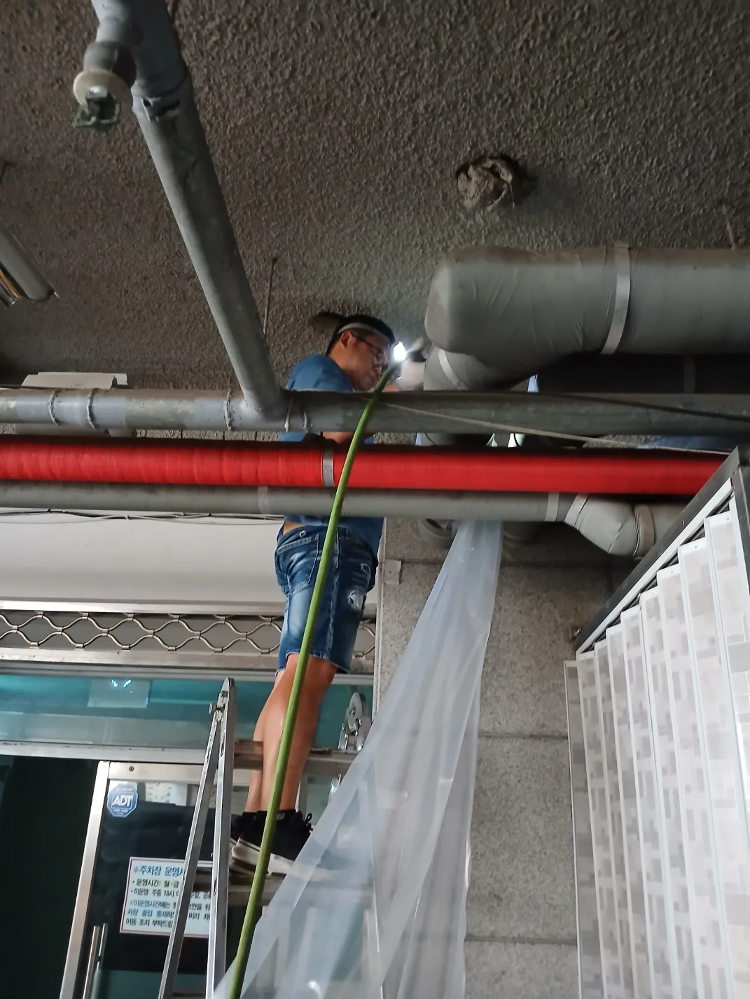

송파구 가락동 변기막힘, 현장 도착 후 진단
송파구 가락동 변기역류 현장에 도착했을 당시 변기에서 오수가 넘쳐 화장실 바닥 전체가 오염된 상태였습니다. 단순히 물이 천천히 내려가는 정도가 아니라 배관 내부의 오수가 변기를 통해 바닥까지 역류한 긴급한 상황이었습니다. 정확한 가락동 변기막힘 원인을 확인하기 위해 변기를 탈거하고 하부 배관을 점검한 결과, 오수관 안쪽까지 오수가 가득 차 있어 정상적인 배수가 전혀 이루어지지 않고 있었습니다. 변기 내부의 단순 막힘이 아니라 건물 오수관에서 발생한 문제로 판단하고 외부에 노출된 오수관을 추가로 점검했습니다.
1단계: 증상 확인과 필요한 장비 작업
건물 외부로 이동해 노출된 오수관을 구간별로 두드리며 내부에 오수가 차 있는 범위를 확인했습니다. 점검 결과 특정 구간부터 배관 내부가 가득 차 있는 것을 확인했고, 이 지점을 송파구 가락동 변기역류의 직접적인 막힘 구간으로 판단했습니다. 내부에 정체된 오수를 배출하고 고압세척 장비를 투입하기 위해 해당 오수관에 작업용 타공을 진행했습니다. 타공과 동시에 배관 안에 가득 차 있던 오수가 터져 나오면서 내부의 압력이 해소되고 막힘 위치도 정확하게 확인됐습니다.

2단계: 원인 구간 처리와 정상 작동 확인
타공한 부분을 통해 고압세척 장비를 투입하고 오수관 내부에 쌓여 있던 이물질과 오염물을 강한 수압으로 밀어냈습니다. 일시적으로 고여 있던 오수만 배출하면 잔존 이물질로 인해 가락동 변기막힘과 오수 역류가 다시 발생할 수 있기 때문에 배관 내부의 흐름이 완전히 회복될 때까지 반복해서 세척했습니다. 오수관 고압세척을 통해 배관 벽면과 막힘 구간에 남아 있던 이물질까지 제거하고 오수가 정상적으로 배출되는 상태로 만들었습니다.

작업 결과와 재발 방지 안내
오수관 고압세척을 마친 뒤 배관 내시경을 투입해 내부 상태를 다시 점검했습니다. 작업 전에는 오수와 이물질로 가득 차 내부 확인이 어려웠지만, 세척 후에는 새 배관처럼 깨끗해진 모습과 원활하게 확보된 배수 통로를 확인할 수 있었습니다. 최종 통수 점검에서도 오수가 막힘 없이 정상적으로 배출되는 것을 확인해 송파구 가락동 변기역류 문제를 말끔히 해결했습니다. 고객님께서도 오염된 화장실 바닥까지 오수가 넘쳤던 상황이 완전히 해결된 것을 확인하고 만족해주셨습니다. 변기 물이 평소보다 천천히 내려가거나 수위가 갑자기 올라올 경우에는 반복해서 물을 내리지 말고 변기 하부와 오수관 막힘 여부를 점검받는 것이 추가 역류를 예방하는 데 도움이 됩니다.
최종 조치: 외부 노출 오수관의 막힘 구간을 타공한 뒤 고압세척을 진행하고 배관 내시경으로 내부 상태와 배수 흐름 확인
현장 방문 전 확인하는 비용과 작업 범위
신라건축설비는 현장 증상과 배관 구조를 확인한 뒤 필요한 작업과 예상 비용을 안내합니다. 단순 관통으로 해결되는지, 배관내시경·석션·고압세척 또는 변기 탈거가 필요한지는 현장 상태에 따라 달라집니다. 출장비와 야간 작업비, 추가 장비 비용이 발생할 수 있는 경우 작업 전에 먼저 설명하고 동의를 받은 범위에서 진행합니다.
업체를 선택할 때 확인할 사항
무조건적인 ‘0원’ 표현보다 실제 작업 범위, 추가 비용 조건, 사용 장비와 사후 대응 기준을 확인하는 것이 중요합니다. 해결되지 않았을 때의 비용 기준과 작업 후 동일 증상 발생 시 점검 범위를 사전에 문의해두면 불필요한 분쟁을 줄일 수 있습니다.
송파구 변기막힘 자주 묻는 질문
변기를 꼭 탈거해야 하나요?
변기에서 오수가 역류해 화장실 바닥 전체로 넘쳐흐르고 배수가 전혀 이루어지지 않음처럼 증상이 나타나더라도 원인은 현장마다 다를 수 있습니다. 장비와 배관 구조를 확인한 뒤 필요한 작업 범위를 안내합니다.
작업 전 비용을 알 수 있나요?
작업 전 증상과 현장 여건을 확인해 예상 범위와 비용을 먼저 안내합니다. 변기 탈거, 장비 추가 투입 또는 공용배관 작업이 필요한 경우 고객 동의 없이 임의로 진행하지 않습니다.
같은 증상이 다시 생기면 어떻게 하나요?
완료 후 정상 작동을 함께 확인하고 작업 범위에 따른 사후 안내를 드립니다. 동일 증상이 반복되면 현장 기록을 기준으로 원인을 다시 점검합니다.
변기막힘 서울·경기 출동지역
신라건축설비는 송파구 가락동 현장을 포함해 서울 25개 구와 경기도 31개 시·군의 배관 문제를 상담합니다. 현장 거리와 기사 배정 상황에 따라 출동 가능 여부를 먼저 안내드립니다.
서울 전 지역
강남구 · 강동구 · 강북구 · 강서구 · 관악구 · 광진구 · 구로구 · 금천구 · 노원구 · 도봉구 · 동대문구 · 동작구 · 마포구 · 서대문구 · 서초구 · 성동구 · 성북구 · 송파구 · 양천구 · 영등포구 · 용산구 · 은평구 · 종로구 · 중구 · 중랑구
경기도 주요 출동지역
수원시 · 용인시 · 고양시 · 화성시 · 성남시 · 부천시 · 남양주시 · 안산시 · 평택시 · 안양시 · 시흥시 · 파주시 · 김포시 · 의정부시 · 광주시 · 하남시 · 광명시 · 군포시 · 양주시 · 오산시 · 이천시 · 안성시 · 구리시 · 의왕시 · 포천시 · 양평군 · 여주시 · 동두천시 · 과천시 · 가평군 · 연천군